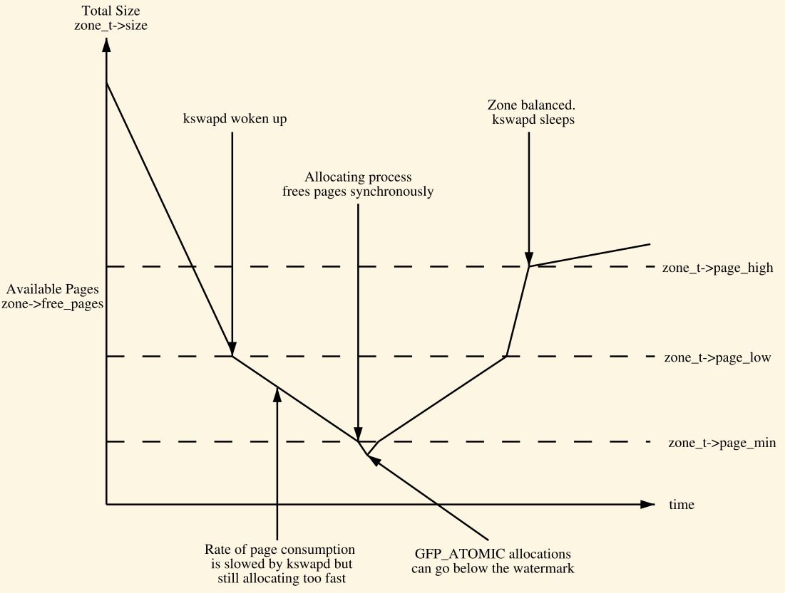

内存管理之描述物理内存
Table of Contents
本文介绍Linux内存管理的一部分，即Linux内核是如何描述物理内存的。
Linux的内存管理适用于所有架构，所以内存管理必有它的一些跨架构上层的通用概念（数据结构）。 首先要区分下的是UMA（Uniform Memory Access）和NUMA（Non Uniform Memory Access）。前者的意义是，对于所有物理内存来说其被CPU访问的时间都是一样的。对于后者，却把内存划分为许多Bank（姑且理解为块），依据它们到CPU的远近，其访问时间是不一样的。另外一些内存又可以划分为DMA的用途，也就是供给设备直接访问，从这个角度看，DMA和node（下文）是同等层次的概念。
描述这样的一个bank，叫做结点（node），以数据结构pg_data_t表示之。内存的统计信息和页面替换都是在node的层次上做的。在NUMA机器上，一个NUMA node就会有一个pg_data_t结构体表示，而对于UMA机器，则是一个pg_data_t结构体表示所有内存。
node又往下分为很多的zones，在内核里用zone结构体表示。这些zone又划分为不同的类型，比如有ZONE_DMA，ZONE_NORMAL，ZONE_HIGHMEM。
大多数内存操作发生在ZONE_NORMAL类型的zone中，所以这种类型的zone对于系统性能的影响至关重要。 ZONE向下又把内存划分为固定的page frame（页框）。页框由结构体page表示。
所有这些结构体的关系如下图：

Figure 1: 内存管理的各结构体如何组织
1 结点
前文已述，内存中的每个结点都由pg_data_t（pglist_data）数据结构来表示，当分配一个page时，内核采用结点就近原则，离运行CPU最近那个结点中的页面将会被用来分配page。现在我们可以来看看 pglist_data结构体中的一些成员了。
typedef struct pglist_data { struct zone node_zones[MAX_NR_ZONES]; struct zonelist node_zonelists[MAX_ZONELISTS]; int nr_zones; }
现在仅介绍这几个简单的成员, 未来随着深入的学习会介绍更多. node_zones就是包含在当前结点中的所有zone. zonelist是所有结点的所有zone. 而nr_zones是结点的个数.
2 区域
每个结点里会有多个区域(zone), 本节介绍区域.
zone由结构体zone表示. zone结构体统计了页面(page)的使用情况. 下面简单的看下它的几个成员:
struct zone { unsigned long _watermark[NR_WMARK]; unsigned long watermark_boost; struct pglist_data *zone_pgdat; atomic_long_t managed_pages; unsigned long spanned_pages; unsigned long present_pages; const char *name; struct free_area free_area[MAX_ORDER]; spinlock_t lock; }
解释下这几个成员的意义:
前两个是水印相关的, 这个实际上是控制内存紧张时的一种刻度，其中watermark_boost作为水印的基准，什么叫水印的基准呢？看看下面几行来自mmzone.h的代码可知：
enum zone_watermarks { WMARK_MIN, WMARK_LOW, WMARK_HIGH, NR_WMARK }; #define min_wmark_pages(z) (z->_watermark[WMARK_MIN] + z->watermark_boost) #define low_wmark_pages(z) (z->_watermark[WMARK_LOW] + z->watermark_boost) #define high_wmark_pages(z) (z->_watermark[WMARK_HIGH] + z->watermark_boost) }
关于水印后面还有小节会讲述到。
- lock主要用来保护对free_area的访问.
- spanned_pages: 该结点中的所有page, 包括在hols里的. 即是spanned_pages = zone_end_pfn - zone_start_pfn, 就是跨越整个zone.
- present_pages: 在zone中物理上存在的页面, 即是present_pages = spanned_pages - absent_pages(pages in holes).
- managed_pages: 由伙伴系统(后文介绍)管理的页面, 即是managed_pages = present_pages - reserved_pages.
- name: zone的字符串名, 比如DMA, Normal, HighMem这种.
- lock: 用来保护对free_area区域的访问.
- free_area: 伙伴分配系统用来分配的.
2.1 Zone水印
当系统中可用的内存较少时，守护程序kswapd（pageout daemon）就会被唤醒去释放页面。每个zone中 都有三个水印：
- _watermark[WMARK_MIN]
- _watermark[WMARK_LOW]
- _watermark[WMARK_HIGH]
它们三者的关系如下图所示：

Figure 2: min，low，high三者水印的关系
注意真正对这三个水印的访问不是图中标记的zone_t->page_high，较新的内核zone中直接的是没有这些成员的，而是通过zone->_watermark[WMARK_MIN]等。_watermark[WMARK_MIN]是通过函数free_area_init_core依据一定比例算出来的。
而在不同的水印处，会采用不同的行为来解决内存紧张问题：
- _watermark[WMARK_MIN]：当可用的pages到达这个值时，kswapd就会被唤醒去释放一些页。
- _watermark[WMARK_MIN]：到达这个值时，说明内存极其紧张了。kswapd以一种synchronous（后文细讲）的方式工作，也叫做direct-reclaim路径。
- 对于zone水位在_watermark[WMARK_HIGH]的，kswpad不会释放其中的page了，这时kswapd继续睡眠了。
2.2 Page
系统中的每个物理页面都有一个page结构体来表示（管理）。现在看看几个简单的成员：
struct page { unsigned long flags; union { struct list_head lru; struct address_space *mapping; pgoff_t index; atomic_t _refcount; } }
下面简单介绍下这几个成员：
- flags：描述page的状态，可能的值在page-flags.h文件中的pageflags类型可以看到。对于这些
flags中的bit的操作是通过一组宏来实现的，而不是直接操作它，比如有SetPageUptodate，这个函
数再往下是架构定义提供的了。flags可能有哪些值呢？简单看下：
- PG_uptodate：说明页的内容是否有效。
注意上述结构体省略了一些成员，page结构体是一个复合的复杂结构体，本次就先只研究这些成员。